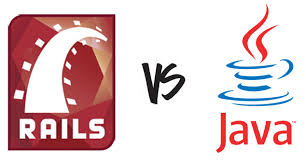

What is Rails? A brief intro to Ruby on Rails
November 22nd, 2015
As we wrap up the remote Phase 0 stage of Dev Bootcamp, we'll soon begin the onsite immersion program where we will spend significant time using the web application framework known as Ruby on Rails, or more simply, Rails. Rails is an open-source web application framework originally designed by David Heinemeier Hansson in 2004. What exactly is a web application framework? For starters, we must consider what a web application is.

Ruby vs. Javascript: Hashes & Objects
November 14th, 2015
This week in Dev Bootcamp was our 3rd week diving deeper and deeper into Ruby. In today’s post, I’m going to attempt to explain the concept of classes, and why they are incredibly useful in any object-oriented programming language (i.e. pretty much all modern programming languages).

It's time for Class!
November 3rd, 2015
This week in Dev Bootcamp was our 3rd week diving deeper and deeper into Ruby. In today’s post, I’m going to attempt to explain the concept of classes, and why they are incredibly useful in any object-oriented programming language (i.e. pretty much all modern programming languages).
What's an Enumarable? How do I use this Map?
October 28th, 2015
In this week’s DevBootcamp content, we explored more complex methods in Ruby, solving some fun challenges including how to create dice with infinite sides, how to calculate the mode, and so much more! We also began (without realizing it) to use a certain types of methods called enumerable methods. What exactly is an enumerable method?
CSS Debate: Classes vs. IDs
October 14th, 2015
The past two weeks at Dev Bootcamp Phase 0, we've been focusing on the core nuts and bults of web development - HMTL and CSS. Everyone has heard of HTML (even my mother). CSS is somewhat less universally understood, but is arguably more important and far more powerful than HTML. While HTML is where the content (core text, images, and structure) of a website is built, CSS determines how that content actually looks to the user. CSS stands for Cascading Style Sheets, and will be the topic of today's blog post....
Why Version Control is a Developer's Best Friend
October 1st, 2015
Welcome to my first blog post! For those who aren't familiar, I recently decided to quit my job...